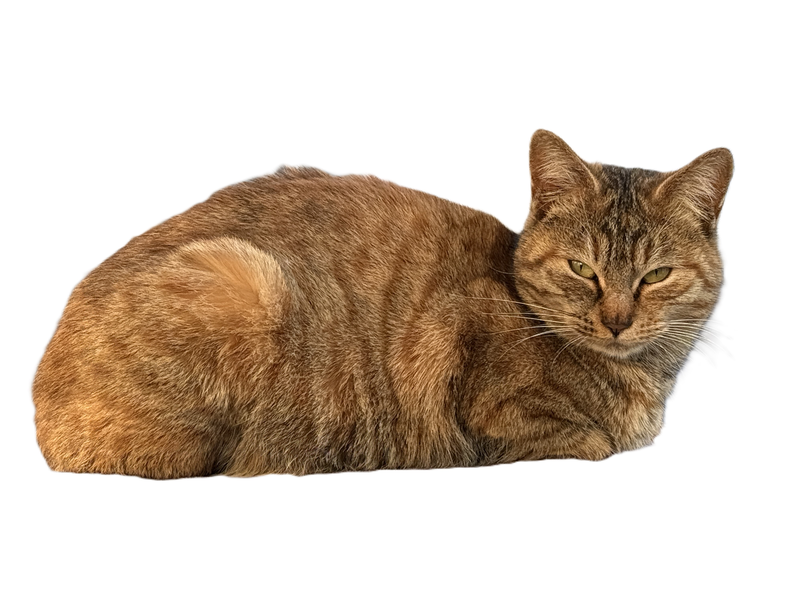
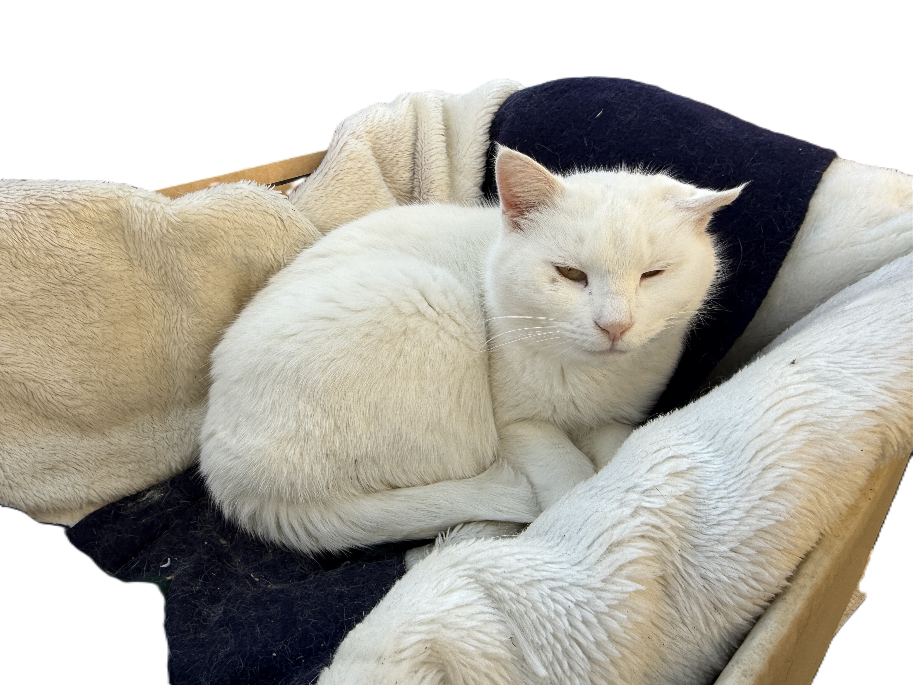
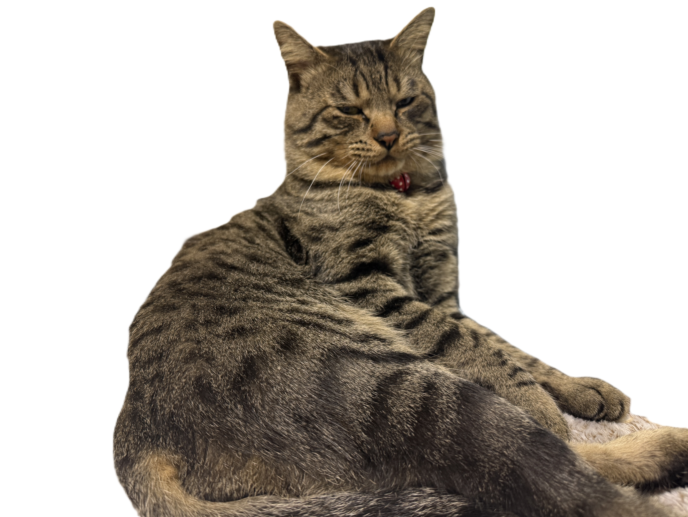

猫の日常にようこそ♪
サイトの概要
このサイトは、私の家の周りに気ままに暮らす猫たちの日常を紹介します。
猫の紹介
- キジトラ猫
-  茶色や黒の縞模様が特徴の猫ちゃん。少し臆病なので人を見ると距離をとるが、ご飯の時間はめっちゃ寄ってくる。
- 白猫
-  真っ白でのんびり屋の猫ちゃん。鈍感なのか警戒心が全くなく、周りの猫ちゃんと仲がいいので、よく一緒に寝ている。
- クーちゃん猫
-  うちの飼い猫。人懐っこく遊ぶのが大好きな性格。2年ほど前に段ボールの中にいたのを発見し保護した。その時はまだ子猫で だいぶ弱っていた。